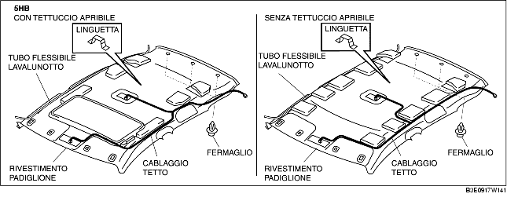

RIMOZIONE/INSTALLAZIONE RIVESTIMENTO PADIGLIONE
B3E091768040W01
1. Scollegare il cavo negativo della batteria.
2. Rivoltare parzialmente il coprigiunto.
3. Rimuovere quanto segue:
-
(1) Coprigiunto tettuccio apribile (modelli con tettuccio apribile)
-
(2) Consolle (4SD) (Vedere RIMOZIONE/INSTALLAZIONE CONSOLLE).
-
(3) Arredamento montante A (vedere RIMOZIONE/INSTALLAZIONE ARREDAMENTO MONTANTE A.)
-
(4) Ancoraggio superiore della cintura di sicurezza anteriore (Vedere RIMOZIONE/INSTALLAZIONE CINTURA DI SICUREZZA ANTERIORE).
-
(5) Batticalcagno anteriore (Vedere RIMOZIONE/INSTALLAZIONE BATTICALCAGNO ANTERIORE).
-
(6) Batticalcagno posteriore (Vedere RIMOZIONE/INSTALLAZIONE BATTICALCAGNO POSTERIORE).
-
(7) Arredamento inferiore montante B (Vedere RIMOZIONE/INSTALLAZIONE ARREDAMENTO INFERIORE MONTANTE B).
-
(8) Arredamento superiore montante B (Vedere RIMOZIONE/INSTALLAZIONE ARREDAMENTO SUPERIORE MONTANTE B).
-
(9) Sedile posteriore (vedere RIMOZIONE/INSTALLAZIONE SEDILE POSTERIORE.)
-
(10) Arredamento passaruota (vedere RIMOZIONE/INSTALLAZIONE ARREDAMENTO PASSARUOTA.)
-
(11) Arredamento superiore laterale bagagliaio (5HB) (Vedere RIMOZIONE/INSTALLAZIONE ARREDAMENTO SUPERIORE LATERALE BAGAGLIAIO).
-
(12) Arredamento montante C (vedere RIMOZIONE/INSTALLAZIONE ARREDAMENTO MONTANTE C).
-
(13) Luce leggimappa (vedere RIMOZIONE/INSTALLAZIONE LUCE LEGGIMAPPA.)
-
(14) Luce abitacolo (vedere RIMOZIONE/INSTALLAZIONE LUCE ABITACOLO.)
-
(15) Parasole (vedere RIMOZIONE/INSTALLAZIONE ALETTA PARASOLE.)
-
(16) Maniglia d'appiglio (vedere RIMOZIONE/INSTALLAZIONE MANIGLIA D'APPIGLIO.)
4. Scollegare il connettore del cablaggio del tetto e rimuovere la relativa graffetta dalla carrozzeria.
5. Scollegare il tubo flessibile del lavalunotto. (5HB)
6. Rimuovere i fermagli.


7. Staccare la linguetta dal pannello del tetto e rimuovere il rivestimento del padiglione.
8. Estrarre il rivestimento del padiglione dal vano della porta lato passeggero. (4SD)
9. Estrarre il rivestimento del padiglione dal portellone aperto. (5HB)
10. Installare in ordine inverso rispetto alla rimozione.